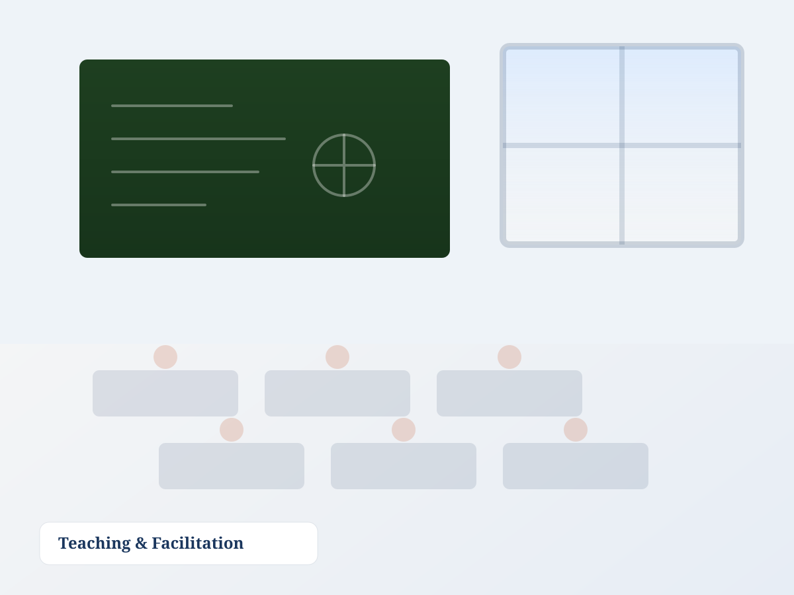
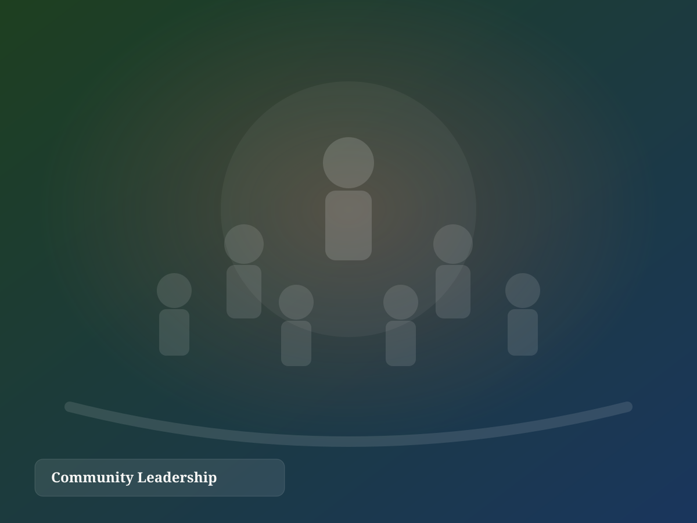
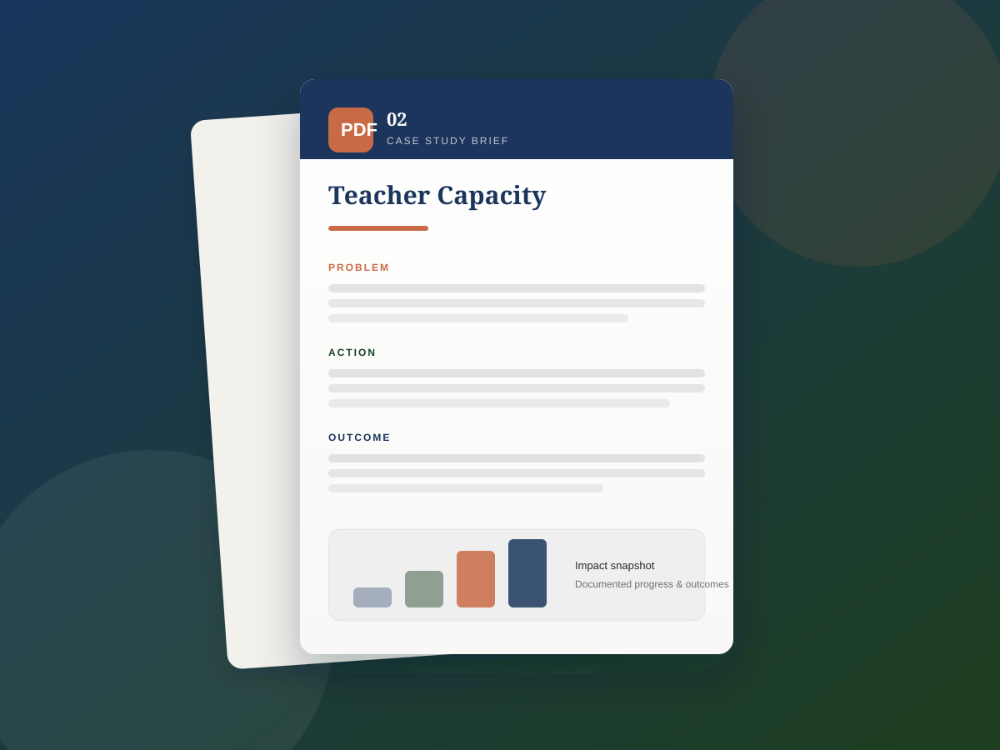
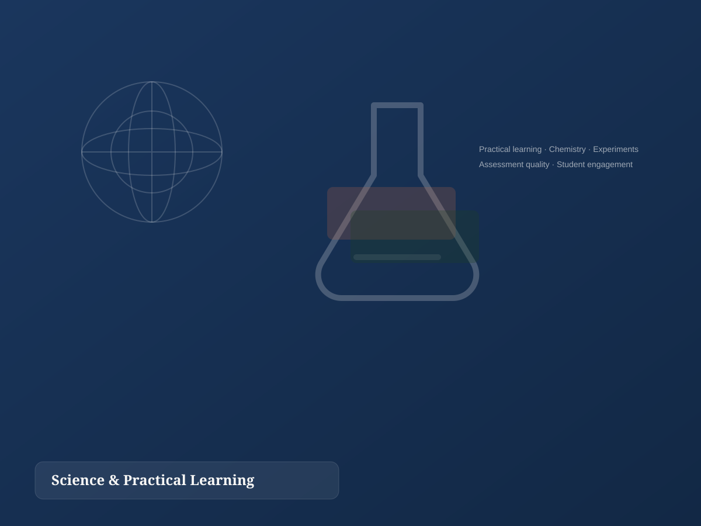
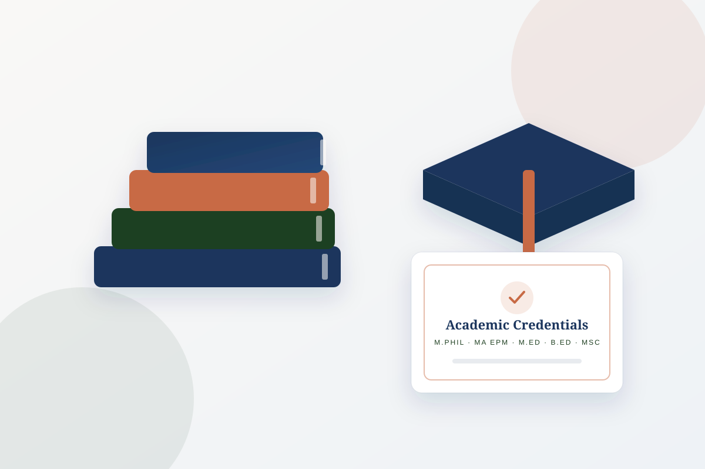
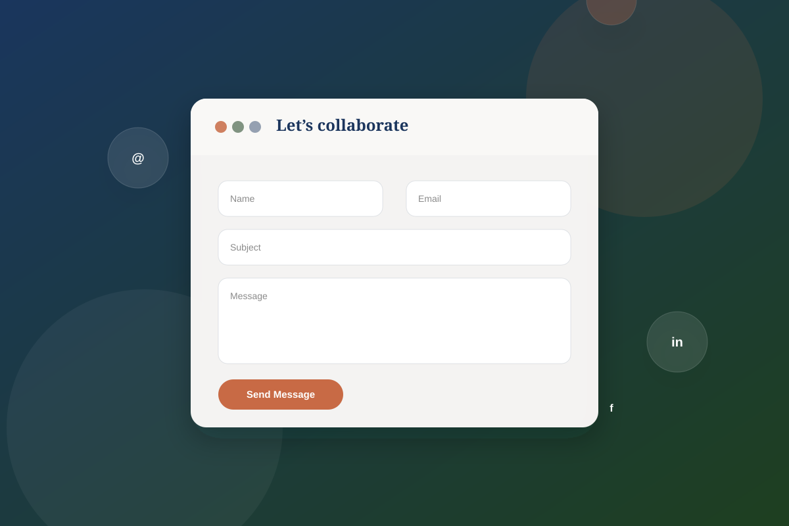

0+
Years of professional experience
Education · Community · Public Service
Hamida Rahman Khokhar is an NGO Executive and Educational Consultant with 25+ years of experience across project leadership, distance education, science teaching, and grassroots development in Pakistan.
Current Focus
Project management, teacher development, and education access programmes that are practical, measurable, and community-rooted.
Impact Dashboard
Years of professional experience
Workshops, initiatives & education activities supported
Learners and community members reached
Advanced academic & professional qualifications
Core Competencies
Hamida’s work spans the full arc from curriculum and assessment to programme design and community mobilisation. The result is leadership that understands both institutional requirements and the realities of the people being served.


Pillar One
Pillar Two
Case Studies
Each case study follows a Problem–Action–Outcome framework to present educational and NGO work with clarity, accountability, and practical relevance.
Children in low-income neighbourhoods lacked safe after-school learning spaces and a practical pathway back into formal education.
Coordinated evening learning circles, mobilised volunteer tutors, engaged mothers as ambassadors, and introduced attendance and progress tracking.
Built a repeatable operating model with steadier participation, clearer documentation, and a stronger bridge to continued learning.

B.Ed and M.Ed distance learners had strong theoretical exposure but uneven preparation for classroom practice and assessment.
Redesigned workshop flow around demonstration, micro-teaching, feedback, and shared rubrics while mentoring tutors for consistency.
Improved workshop coherence across centres and created clearer evidence of practical competence in learner development.
Students often experienced science as abstract, while variation in practical examination marking affected confidence in results.
Led science exhibitions, hands-on demonstrations, reference contributions, and examiner standardisation for Chemistry Practical.
Strengthened student engagement with practical science and supported more consistent, credible assessment practices.
Testimonials
Hamida brings rare discipline to programme work — her documentation, follow-through, and care for beneficiaries keep teams aligned and accountable.
Her workshops translate educational theory into practice. Learners leave with confidence, structure, and practical tools they can apply immediately.
From science education to assessment standards, she combines subject expertise with integrity — a steady leader who raises the quality of every initiative.
Media & Publications
A body of work spanning education, science communication, and community outreach — alongside downloadable professional documents.
Impact Gallery
A curated collection of programme, academic, and outreach visuals. Click any image to view it larger.


Professional Journey
Leading project-related documentation, coordination, and implementation for community-focused initiatives.
Supporting M.A/M.Ed learners through workshop facilitation, guidance, and assessment-aligned teaching.
Contributed to examination quality through standardisation and oversight of practical assessment.
Provided academic administration and institutional leadership in a higher-secondary/degree setting.
Additional strengths: publications/reference contributions, science exhibitions, English language training, computer science diploma, and bilingual communication in Urdu and English.
Contact
For partnerships, workshops, project support, or speaking opportunities, reach out directly or send a message through the form.

Fill out the form and submit — your message will be sent directly via FormSubmit.